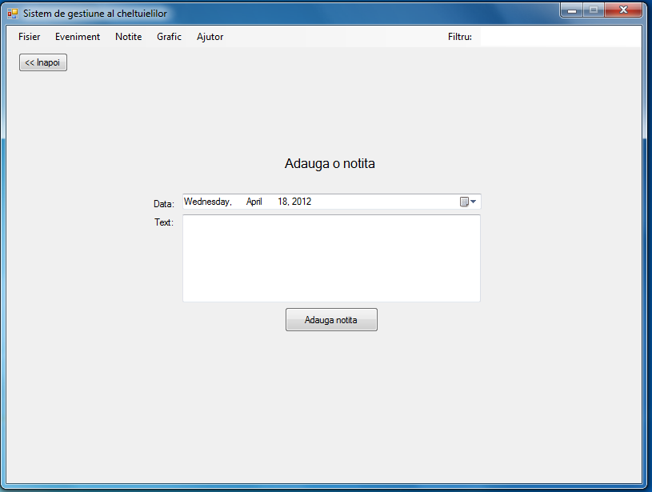

Sistem de gestiune al cheltuielilor
Ecranul principal
Acesta este ecranul principal, unde initial sunt afisate evenimentele (cheltuieli / venituri) din ultimele 30 zile. Prin apasarea butonului "Toate evenimentele", se poate comuta spre a fi afisate toate evenimentele introduse pana in prezent. Pentru fiecare eveniment sunt afisate:
-
"Data": data cand s-a intamplat evenimentul. Daca se da click pe coloana "Data", evenimentele vor fi afisate in ordine cronologica
-
"Detalii": o scurta descriere a evenimentului
-
"Perioada": pentru evenimentele care au loc periodic, se va afisa: "Saptamanal", "Lunar", "Odata la x zile". Pentru evenimentele care nu au loc periodic se va afisa "-"
-
"Suma": suma care a fost primita/data. Veniturile sunt afisate cu verde, iar cheltuielile sunt afisate cu rosu
In partea din dreapta-sus a ecranului sunt 4 butoane:
-
"Adauga": la apasarea acestui buton, se va afisa ecranul de adaugare a evenimentelor
-
"Sterge": la apasarea acestui buton, evenimentele selectate vor fi sterse
-
"Modifica": la apasarea acestui buton, se va afisa ecranul de modificare al evenimentului selectat
-
"Aveti x notite!": la apasarea acestui buton, se vor afisa notitele care au fost create si nu au fost afisate inca. Acest buton se afiseaza doar daca exista astfel de notite
In partea din dreapta-jos a ecranului sunt afisate:
-
"Subtotal": diferenta dintre venituri si cheltuieli de pe ultimele 30 zile
-
"Total": diferenta dintre toate veniturile si cheltuielile introduse
In partea superioara a ecranului se afla meniul aplicatiei:
-
Fisier
-
Deschide: redeschide fisierul cu evenimente, fara a salva modificarile facute
-
Salveaza: salveaza modificarile aduse evenimentelor
-
Exporta Excel: exporta evenimentele afisate in format Excel (.xlsx)
-
Iesire: iesirea din aplicatie
-
Eveniment
-
Adauga: afiseaza ecranul de adaugare a evenimentelor
-
Modifica: afiseaza ecranul de modificare a evenimentului selectat
-
Sterge: sterge evenimentele selectate
-
Afiseaza cheltuieli: cheltuielile vor fi afisate doar daca este selectata aceasta optiune
-
Afiseaza venituri: veniturile vor fi afisate doar daca este selectata aceasta optiune
-
Notite
-
Adauga: afiseaza ecranul de adaugare a notitelor
-
Afiseaza toate: afiseaza toate notitele create pana in prezent. Cele care au fost afisate sunt scrise cu rosu, iar cele care urmeaza a fi afisate sunt scrise cu verde.
-
Grafic
-
Afiseaza grafic: afiseaza ecranul cu graficul
-
Salveaza grafic: salveaza graficul curent in format imagine
-
Ajutor
-
Tutorial: afiseaza acest tutorial
-
Despre: afiseaza informatii despre aplicatie si echipa
-
Filtru: evenimentele pot fi filtrate dupa detalii prin introducerea unui text in aceasta casuta
Ecranul de adaugare/modificare evenimente
Cu ajutorul acestui ecran se pot adauga noi evenimente sau modifica evenimente deja existente. Pentru a adauga/modifica un eveniment se vor completa campurile:
-
Data: data cand a avut loc evenimentul
-
Suma: valoarea venitului/cheltuielii
-
Perioada: se poate alege periodicitatea evenimentului (saptamanal, lunar, odata la x zile, neperiodic)
-
Odata la: in cazul in care evenimentul este periodic, cu perioada odata la x zile, aici se poate introduce valoarea lui x
-
Tip eveniment: se poate alege daca evenimentul este o cheltuiala sau un venit
-
Detalii: detalii despre eveniment
Daca se doreste adaugarea/modificarea evenimentului, se va apasa butonul "Adauga eveniment"/"Modifica eveniment". Altfel, se va apasa butonul "Inapoi".
Ecranul de adaugare a notitelor

Cu ajutorul acestui ecran se pot adauga notite. Pentru a adauga o notita se vor completa campurile:
-
Data: data cand vrem sa fim atentionati
-
Text: textul care ne va fi afisata la data setata anterior
Daca se doreste adaugarea notitei, se va apasa butonul "Adauga notita". Altfel, se va apasa butonul "Inapoi".
Ecranul de afisare a notitelor
 In acest ecran sunt afisate notitele active la momentul de fata. Prin apasarea butonului "Inapoi", se revine la ecranul principal. Prin apasarea butonului "Am citit notite" se vor marca toate notitele active ca fiind citite. Notitele citite nu se mai iau in considerare decat atunci cand se cere explicit afisarea tuturor notitelor.
In acest ecran sunt afisate notitele active la momentul de fata. Prin apasarea butonului "Inapoi", se revine la ecranul principal. Prin apasarea butonului "Am citit notite" se vor marca toate notitele active ca fiind citite. Notitele citite nu se mai iau in considerare decat atunci cand se cere explicit afisarea tuturor notitelor.
Ecranul de afisare a graficului
In acest ecran, evenimentele vor fi afisate sub forma de grafic. Initial, vor fi reprezentate toate evenimentele cu valori absolute.
Din partea superioara a ecranului se poate selecta perioada pentru care se vor reprezenta grafic evenimentele. De altfel, se poate alege tipul de grafic: cu valori absolute sau cu valor cumulative.
Dupa setarea parametrilor graficului, acesta poate fi salvat in format imagine.